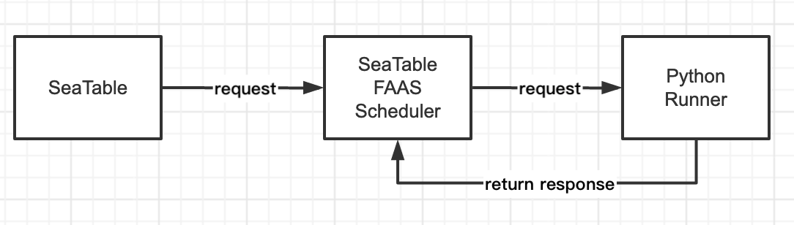
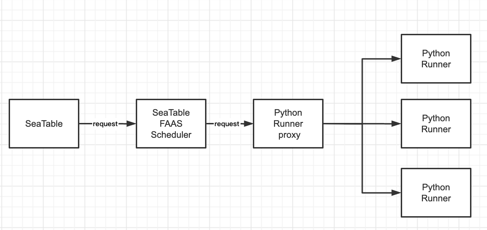

Deploy SeaTable Python Runner¶
Components¶
The execution of Python scripts in SeaTable requires the interaction of SeaTable with two other components. The functions of SeaTable, SeaTable FAAS Scheduler, and SeaTable Python Runner and their relationship are as follows:
- SeaTable: Provides the editor to create, save, import/export, and modify Python scripts. When a user clicks to run a script, SeaTable sends a requests to the SeaTable FAAS Scheduler.
- SeaTable FAAS Scheduler: Handles incoming requests from SeaTable, schedules tasks, and sends requests to the SeaTable Python Runner. Additionally, it saves and counts the results of script runs. As such, it is equivalent to a master node.
- SeaTable Python Runner: Runs the scripts as tasked by the FAAS Scheduler. When the SeaTable Python Runner receives a request, it downloads the script content and starts a Docker container to run the script. After script execution, the container is destroyed for data security. As such, it is equivalent to a worker node.

If SeaTable runs many Python scripts and timely script execution is essential, multiple Python Runners can be deployed with a load balance component distributing the load.

Requirements¶
SeaTable FAAS Scheduler and SeaTable Python Runner require 2 cores and 4GB RAM. These resources are a minimum requirement. With rising numbers of executed Python scripts, the allocated resources should be upped.
It is strongly recommended to install SeaTable FAAS Scheduler and Python Runner on a separate host. Running these two components on the same machine as SeaTable is very likely to cause conflicts.
These instructions assume that no other services are installed on the host, especially no other services listening on port 80 and 443.
SeaTable FAAS Scheduler and Python Runner use Docker and Docker Compose. Docker must be 20.04 or more recent. Verify the installed Docker version using docker --version. If your version is too old, update following the official instructions.
Setup¶
The SeaTable and SeaTable FAAS Scheduler host communicate via their hostnames. For illustrative purposes, these deployment instructions use the hostnames ...
- cloud.seatable.com for SeaTable and
- faas.seatable.com for SeaTable FAAS Scheduler.
Additionally, the following assumptions and conventions are used in the rest of this document:
- SeaTable Server - SeaTable Developer Edition or SeaTable Enterprise Edition - was installed according to this manual.
/opt/seatable-python-runnerand/opt/seatable-faas-schedulerare the directories of the Python Runner and FAAS Scheduler, respectively. If you decide to put them in different directories - which you can - adjust all paths accordingly.- SeaTable FAAS Scheduler uses two Docker volumes for persisting data generated in its database and SeaTable FAAS Scheduler Docker container. The volumes' host paths are /opt/seatable-faas-scheduler/mysql-data and /opt/seatable-faas-scheduler/shared, respectively. It is not recommended to change these paths. If you do, keep that in mind when following these instructions.
- All configuration and log files for SeaTable and the webserver Nginx are stored in the volume of the SeaTable FAAS Scheduler container.
Setup of SeaTable Python Runner¶
Downloading the Python Runner Package¶
Download the install package from Github using wget and unzip the archive. Delete the ZIP file after unzipping. Using Python Runner version 2.0.1 as an example, this are the commands:
cd /opt
wget https://github.com/seatable/seatable-admin-docs/releases/download/seatable-python-runner-2.0.1/seatable-python-runner-2.0.1.zip
unzip seatable-python-runner-2.0.1.zip
rm seatable-python-runner-2.0.1.zip
Installing the Prerequisites¶
SeaTable's Python Runner uses some pip packages. Install pip first:
# CentOS
sudo yum install python3-pip -y
# Debian/Ubuntu
sudo apt install python3-pip -y
Then install the pip packages:
cd /opt/seatable-python-runner
sudo pip3 install -r server_requirements.txt
Downloading the Python Runner Docker Image¶
Pull the image for SeaTable's Python Runner from Docker Hub:
docker pull seatable/python-runner:latest
You can find all versions of Python Runner images in Docker repository.
Initializing Python Runner¶
Initialize the Python Runner by running the init script:
sudo ./init.sh
Modifying the Configuration File¶
Open the Python Runner's conf file in an editor and add the address of SeaTable's FAAS Scheduler to the configuration:
cd /opt/seatable-python-runner/conf
nano seatable_python_runner_settings.py
Edit the configuration as follows:
SCHEDULER_URL = 'https://faas.seatable.com' # The URL of seatable-faas-scheduler, if you use an IP address, please add http://
Starting SeaTable Python Runner¶
Start SeaTable Python Runner using the SH-script:
cd /opt/seatable-python-runner
sudo ./start.sh
After the execution of the start script, the directory structure looks as follows:
$ tree /opt/seatable-python-runner/ -L 2
/opt/seatable-python-runner/
├── conf
│ ├── seatable_python_runner.ini
│ └── seatable_python_runner_settings.py
├── function.py
├── init.sh
├── logs
│ ├── seatable-python-runner.log
│ └── uwsgi.log
├── server_requirements.txt
├── settings.py
├── start.sh
├── stop.sh
└── uwsgi.ini
The stop command is as follows:
sudo ./stop.sh
NOTE: The start and stop scripts are a collection of a series of operations, you can edit it according to your needs.
Tweaking the Python Runner¶
uWSGI configuration¶
The SeaTable Python Runner uses uWSGI. uWSGI's configuration is saved in the INI-file seatable_python_runner.ini in /opt/seatable-python-runner/conf.
The default configuration for SeaTable Python Runner 2.0.1 is:
[uwsgi]
http = :8080
wsgi-file = function.py
callable = app
process = 4
threads = 2
buffer-size = 65536
stats = 127.0.0.1:9191
daemonize = logs/uwsgi.log
disable-logging = false
procname-prefix = run-python
logformat = [%(ltime)] %(method) %(uri) => generated %(size) bytes in %(secs) seconds
NOTE: The configuration may look different for other versions of SeaTable Python Runner.
Setup SeaTable FAAS Scheduler¶
Installing Docker Compose¶
Scheduler uses Docker Dompose. Install the docker-compose package:
# CentOS
sudo yum install docker-compose -y
# Debian/Ubuntu
sudo apt-get install docker-compose -y
Downloading the FASS Scheduler Image¶
Pull the image for SeaTable's FAAS Scheduler from Docker Hub:
docker pull seatable/seatable-faas-scheduler:latest
You can find all versions of SeaTable FAAS Scheduler images in the Docker repository.
Downloading and Modifying docker-compose.yml¶
Download the docker-compose.yml sample file to the FAAS Scheduler's directory and modify the file to fit your environment and settings:
mkdir /opt/seatable-faas-scheduler
cd /opt/seatable-faas-scheduler
wget -O "docker-compose.yml" "https://manual.seatable.io/docker/Python-Runner/docker-compose.yml"
nano docker-compose.yml
The following options must be modified:
- The password of MariaDB root (MYSQL_ROOT_PASSWORD and DB_ROOT_PASSWD)
- The use of Let's Encrypt for HTTPS (SEATABLE_FAAS_SCHEDULER_SERVER_LETSENCRYPT)
- The host name (SEATABLE_FAAS_SCHEDULER_SERVER_HOSTNAME)
Optional customizable option in the docker-compose.yml are:
- The ports of the container seatable-faas-scheduler
- The volume paths for the container db
- The volume paths for the container seatable-faas-scheduler
-
The image tag of the SeaTable FAAS Scheduler version to install (image)
-
The time zone (Optional)
Initializing the Database¶
Initialize the database with the following command:
cd /opt/seatable-faas-scheduler
docker-compose up
NOTE: You should run the above command in a directory with the docker-compose.yml.
Wait for a while. When you see This is an idle script (infinite loop) to keep container running. in the output log, the database initialized successfully. Press keyboard CTRL + C to return to the prompt.
The directory structure should now look as follows (slightly shortend):
$ tree /opt/seatable-faas-scheduler -L 2
/opt/seatable-faas-scheduler
├── docker-compose.yml
├── mysql-data
├── shared
│ ├── seatable-faas-scheduler
│ │ ├── conf (configuration files)
│ │ ├── scripts (script files)
│ │ └── logs (log files)
│ ├── nginx-logs (Nginx logs)
│ └── ssl (SSL certificate)
Modifying the Configuration File of the FAAS Scheduler¶
Being the middle component between the SeaTable server and the Python Runner, the FAAS Scheduler's configuration must be added the addresses of both.
Open the FAAS Scheduler's configuration file in a text editor:
cd /opt/seatable-faas-scheduler/shared/seatable-faas-scheduler/conf
nano seatable_faas_scheduler_settings.py
Edit the configuration as follows:
# faas
FAAS_URL = 'http://host.docker.internal:8080 # Internal address of the Python Runner
# seatable
DTABLE_WEB_SERVICE_URL = 'https://cloud.seatable.com' # URL of SeaTable server
SEATABLE_FAAS_AUTH_TOKEN = '***' # Token to copy to SeaTable's configuration file
Starting the FAAS Scheduler¶
Now start the SeaTable FAAS Scheduler in detached mode:
docker-compose up -d
NOTE: You should run the above command in the directory with the docker-compose.yml.
Modifying the Configuration File of SeaTable¶
Open SeaTable's dtable_web_setttings.py configuration file in a text editor to add the FAAS Scheduler's address:
nano /opt/seatable/seatable-data/seatable/conf/dtable_web_settings.py
Paste the following lines in the configuration file, paste the token from the seatable_faas_scheduler_settings.py and modify the parameter SEATABLE_FAAS_URL:
# for seatable-faas
SEATABLE_FAAS_AUTH_TOKEN = '***' # Token from seatable_faas_scheduler_settings.py
SEATABLE_FAAS_URL = 'https://faas.seatable.com' # URL of the SeaTable FAAS Scheduler
Restarting SeaTable¶
For the modifications in the dtable_web_settings.py to take effect, restart the SeaTable server:
docker exec -d seatable /shared/seatable/scripts/seatable.sh restart
Testing¶
Create a simple Python script in SeaTable. The simplest is a hello world:
print("Hello World!")
If the output console prints "Hello World!", you have successfully configured SeaTable's Python script execution environment.
More Configuration Options of Scheduler¶
Deploy the https¶
- Let's encrypt SSL certificate
If you set SEATABLE_FAAS_SCHEDULER_SERVER_LETSENCRYPT to true in "docker-compose.yml", the container would request a letsencrypt-signed SSL certificate for you automatically.
e.g.
seatable-faas-scheduler:
...
ports:
- "80:80"
- "443:443"
...
environment:
...
- SEATABLE_FAAS_SCHEDULER_SERVER_LETSENCRYPT=True # Default is False. Whether to use let's encrypt certificate.
- SEATABLE_FAAS_SCHEDULER_SERVER_HOSTNAME=demo.faas-scheduler.seatable.com # Specifies your host name if https is enabled
Note：Since the nginx configuration file is only generated automatically when you run the container for the first time, you'd better set SEATABLE_FAAS_SCHEDULER_SERVER_HOSTNAME=True before executing the docker-compose up -d command for the first time.
If you want to use your own SSL certificate, you can refer to the following steps.
- Add your own SSL certificate
- Upload the SSL certificate file to the Scheduler data directory :
/Your Scheduler data volume/ssl/ - Modify the nginx configuration file :
/Your Scheduler data volume/seatable-faas-scheduler/conf/nginx.conf - Reload the Nginx configuration file：
docker exec -it seatable-faas-scheduler /usr/sbin/nginx -s reload
e.g.
server {
if ($host = demo.faas-scheduler.seatable.com) {
return 301 https://$host$request_uri;
}
listen 80;
server_name demo.faas-scheduler.seatable.com;
return 404;
}
server {
server_name demo.faas-scheduler.seatable.com;
listen 443 ssl;
ssl_certificate /shared/ssl/<your-ssl.cer>;
ssl_certificate_key /shared/ssl/<your-ssl.key>;
proxy_set_header X-Forwarded-For $remote_addr;
......
Python Runner and FAAS Scheduler FAQ¶
If, for whatever reason, the installation fails, how to start from a clean state again?
Remove the directory /opt/seatable-faas-scheduler and start again.
What's the reason for the following output in SeaTable's Python?
error: Internal Server Error.
at e/</<
SeaTable cannot communicate with the FAAS Scheduler. Check the configuration and start the FAAS Scheduler via docker-compose.
What's the reasons when the Hello World example to not complete and only outputting?
Running...
The FAAS Scheduler cannot communicate with the Python Runner. Check the configuration and start the FAAS Scheduler via the SH-script.
The Let's Encrypt SSL certificate is about to expire, how do I renew it?
The SSL certificate shoud be renewed automatically 30 days prior to it expiration. If the automatic renewal fails, this command renews the certificate manually:
docker exec -it seatable-faas-scheduler /scripts/renew_cert.sh